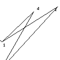

:
shell :
:
shell :

Shell. version alpha 0.1
Screenshot 1 / Screenhot
2 | View demo video
Aknowledgements
|
||||||
Shell is composed by two pieces of software. An interface and a sound engine created using Pure Data (Pure Data by Miller Puckette and others, http://www.crca.ucsd.edu/~msp/software.html ). It also uses some externals for Pure Data (arraycopy, arraysize, flashserver and zexy. By different authors).
The interface is connected to the sound engine allowing to control transformations applied to different samples by manipulating the shape and location of different polygons in the interface.
Shell was originally created to be used as a performance tool possibly with an acoustic instrument (like drums). The sound from the instrument or sound source fills the buffers creating up to 8 simultaneous loops. Each buffer playes authomaticly after it has been filled. When all the buffers are full it starts again filling them from the first one. This keeps over and over again unless you stop the sampling function. The length of this buffers can be set (in compasses) from the control bar at the top (sequence bar). The BPM can be set at the top right corner.
Shell can be also used as a sample player and sounds can imported directly from the hard drive into he buffers.
This implementation of Shell has been created with a grant from the Phonos Fundation and the Interactive Music Department staff at the IUA University of Barcelona (http://www.iua.upf.es/), but also with the help of many musicians that tested and suggested ideas. Thanks to all.